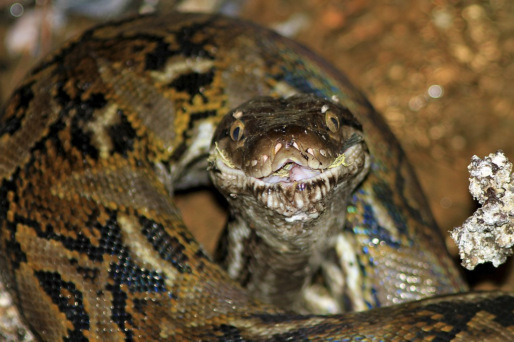
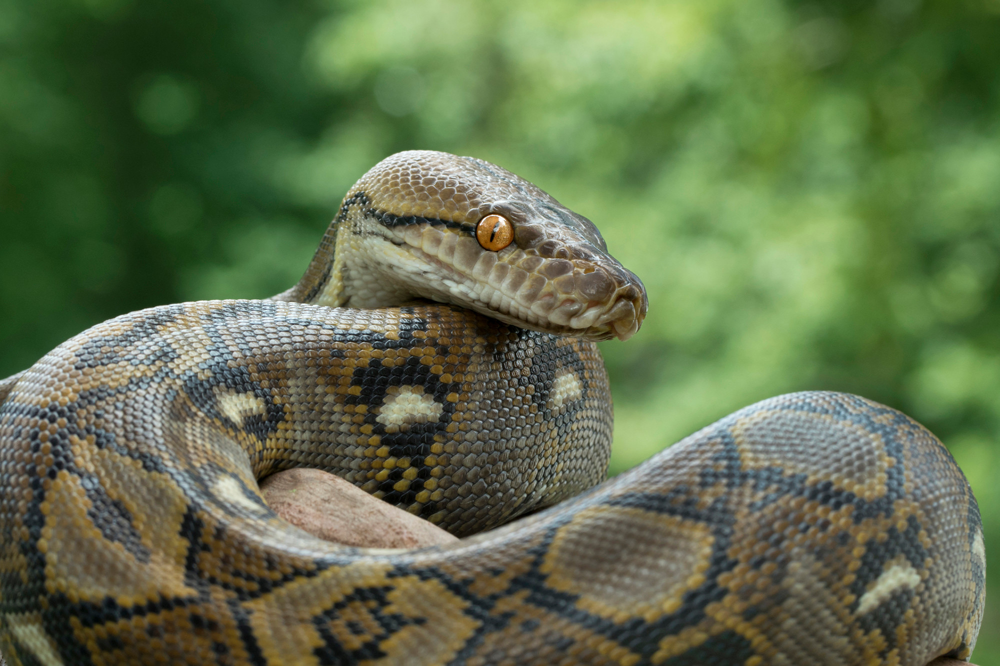
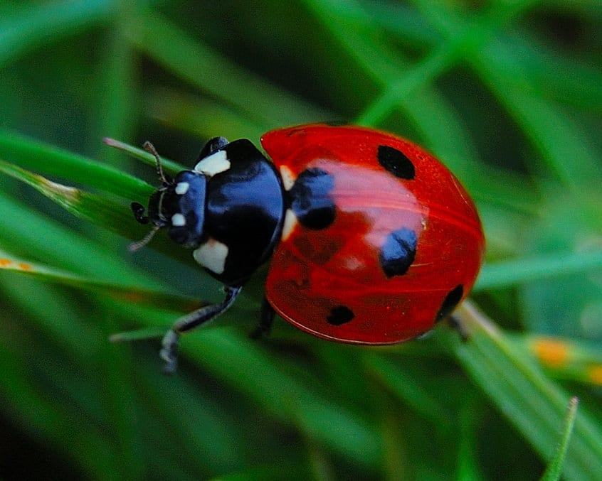

Сетчатый питон
 Сетчатый питон (лат. Python reticulatus) — неядовитая змея из семейства питонов, обитающая в Азии.
Сетчатый питон обитает в тропических лесах, редколесьях, на горных склонах. На Яве найден в горах на высоте до 1200 м над уровнем моря. Ведёт в основном наземный образ жизни, но хорошо лазает по деревьям. Предпочитает влажные места обитания и часто селится по берегам рек и других водоёмов. Прекрасно плавает, иногда заплывает даже в открытое море. Охотится в сумерках и ночью, день проводит в различных укрытиях (например, в пещерах).
Несмотря на наличие большого количества данных о гигантских сетчатых питонах, подобного рода истории не являются достоверными. Известный шведский натуралист Ральф Бломберг в своей книге «Змеи-гиганты и страшные ящеры» упоминает экземпляр длиной 33 фута, то есть около 10 метров. Но непонятно, на каких наблюдениях базируются эти данные. Сетчатый питон с Филиппин длиной 14,085 м и весом 447 кг, о котором сообщалось в СМИ, на самом деле оказался более чем в два раза меньше. Тем не менее, сетчатый питон является самой длинной змеёй мировой фауны. Крупнейшие особи номинативного подвида в дикой природе могут вырастать по меньшей мере до 7 метров в длину. Более тысячи диких сетчатых питонов были измерены на юге Суматры, в длину они были от 1,15 до 6,05 м при весе от 1 до 75 кг. На Флоресе регулярно наблюдают змей длиной более 4—5 метров. Одной из крупнейших измеренных особей была змея из Индонезии, она достигала 6,95 м и весила 59 кг, но при этом не ела 3 месяца. Сетчатые питоны, обитающие на небольших островах, значительно меньше своих материковых сородичей и питонов с более крупных островов. Достоверно самый крупный сетчатый питон, содержавшийся в неволе — самка длиной около 7,5 м по кличке «Саманта», пойманная на Борнео и умершая в 2002 в Зоопарке Бронкса (Нью-Йорк).
Божьи коровки
Бóжьи корóвки, или кокцинелли́ды (лат. Coccinellidae), — семейство жуков. Тело у этих жуков выпуклое, округлое или овальное. Хорошо заметны благодаря яркой «предостерегающей» окраске, представленной разными комбинациями красного, жёлтого, белого и чёрного цвета, преимущественно с чёрными пятнами на основном светлом фоне, реже — наоборот. Длина тела от 0,8 до 18 мм, обычно 4-7 мм. Будучи потревоженными, жуки выделяют из коленных сочленений капельки едкой гемолимфы оранжевого цвета, благодаря чему несъедобны для большинства насекомоядных позвоночных. Божьи коровки и их личинки — хищники, питающиеся тлями, червецами и другими мелкими насекомыми, немногие виды являются растительноядными. Семейство включает около 8 000 видов. Распространены практически по всему земному шару, за исключением Антарктиды и зон с вечной мерзлотой.
Божьи коровки относятся к числу эффективных насекомых-энтомофагов: они уничтожают многих вредителей сельскохозяйственных культур и представляют значительный интерес для разработки биологического метода борьбы с ними.
Кенгуру
Кенгуру (лат. Macropus) — общеупотребительное название группы животных из отряда двурезцовых сумчатых млекопитающих. В широком смысле термин кенгуру относится ко всем представителям семейства кенгуровых, особенно красного филандера, антилопового кенгуру, восточного серого (гигантского) кенгуру и западного серого кенгуру. В узком смысле это название применяется по отношению к наиболее крупным представителям семейства, тогда как самые мелкие называются валлаби, а кенгуровые средних размеров — валлару. Кенгуру являются коренными жителями Австралии. У кенгуру большие, мощные задние ноги, большие ступни, приспособленные для прыжков, длинный массивный хвост для равновесия и маленькая голова. Как и у большинства сумчатых, у самок кенгуру есть мешочек, называемый сумкой, в котором детеныш завершает послеродовое развитие. Большие кенгуру хорошо приспособились к расчистке человеком земель для пастбищного земледелия и изменений среды обитания. Многие из меньших разновидностей кенгуровых редки и подвергаются опасности, в то время как большие кенгуру относительно многочисленны. По оценкам австралийского правительства, в 2011 году в районах коммерческого сбора урожая в Австралии проживало 34,3 миллиона кенгуру по сравнению с 25,1 миллионами годом ранее. Кенгуру является символом Австралии и присутствует на австралийском гербе и на некоторых валютах страны[6] и используется некоторыми известными австралийскими организациями, включая Qantas и Королевские австралийские военно-воздушные силы. Кенгуру важен как для австралийской культуры, так и для национального имиджа. На диких кенгуру охотятся для получения мяса, шкуры и защиты пастбищ. Хотя полезность мяса кенгуру вызывает споры, оно воспринимается как полезное для здоровья человека (по сравнению с другими традиционными видами мяса) из-за низкого содержания жира.
Слово «кенгуру» происходит от «kanguroo» или «gangurru» — названия этого животного на кууку-йимитирском языке аборигенов Австралии (язык пама-ньюнгской семьи), услышанного Джеймсом Куком от аборигенов во время его высадки на северо-восточном берегу Австралии в 1770 году. Широко распространился миф, в соответствии с которым Джеймс Кук, прибыв в Австралию и увидев крупное, передвигающееся прыжками, незнакомое ему животное, обратился к одному из аборигенов с вопросом «что это?», однако тот, не понимая английской речи Кука, ответил ему на своём родном языке: «не понимаю». Как гласит миф, эту фразу, которая якобы звучит как «кенгуру», Кук и принял за название животного. Согласно современным лингвистическим исследованиям под этим мифом нет фактологической базы
У кенгуру мощные задние лапы, массивный хвост, узкие плечи, маленькие передние лапы (похожие на руки человека), которыми они выкапывают клубни и корни. В случае опасности кенгуру переносит всю тяжесть тела на хвост, и тогда обе задние лапы, освободившись, одним движением сверху вниз наносят противнику сильный удар. Отталкиваясь мощными задними лапами, животные могут прыгать до 12 м в длину и до 3 м в высоту. Масса тела составляет до 80 кг. Кенгуру отдыхает, опираясь на хвост.